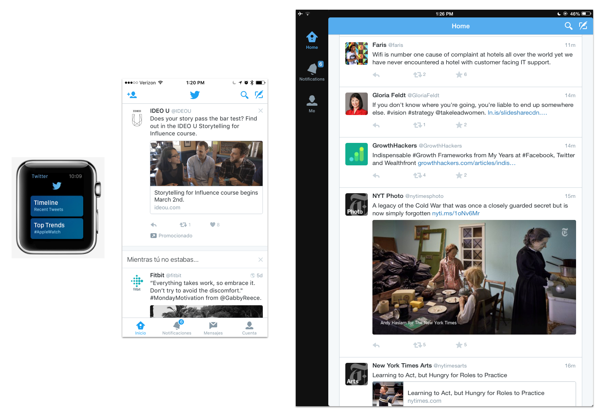

Overview
"Native" design is design on a specific device platform. iOS is the platform for Apple devices, and Android is the Google platform. Each of them have their own design patterns, that are different from eachother, and also different from designing for the web.
There have been 800 million Apple devices sold in the world, it's a huge platform to get your products out to the world. The only way to interact with an app on an iOS device is to download it from the App Store on device.
iOS platform characteristics
86% of mobile users prefer apps to websites in the browser.
Faster interactions are possible because the code is talking directly to the device it's running on.
Direct relationship between the user of the device and the apps on the device, since they choose to download specific products.
Sales and promotion of the app happen directly in the App Store of the device. A good app, and a good relationshop with Apple can mean promotions and more downloads.
Developers can only release app updates when Apple allows. This is usually on a 2-4 week cycle. This means that you can't push out changes whenever you want.
A bad design or code base will be more obvious on a native platform because people are expecting standards of interaction among all their apps.
Pixel perfect design is not the goal. Instead, users should be allowed to take the easiest path to feel successful and confident on whatever device they are using.
Hierarchy
For any complex product, the app will need a hierarchy for users to follow.
Users make one choice at a time, diving deeper into the hierarchy of the content until they reach their destination. In order to get back to where they started, they must back step until they get where they started.
See the Apple documentation on navigation.
There are several ways for this to manifest in your navigation structure.
Common navigation options
Hidden navigation
This navigation style is often referred to as the hamburger menu because of the icon used to surface it. This style of navigation is not recommended by Apple, but it is one of the easiest ways to port content over from other platforms. It is commonly used in web or Android design.
Examples of iOS apps that use this structure: Spotify, Uber, Lyft.
Pros:
more room for content on a small screen.
no restrictions on what can go in the menu.
commonly understood place to find things in the app.
Cons:
Hides navigation so it can be harder to find things.
easy for this section to become a junk drawer.
hidden features are less discoverable.
Tabbed navigation
Tabbed navigation surfaces all of the high level navigation items on the screen at all times. Inside each top level tab, the user can dive deeper into the hierarchy of that section.
Examples of iOS apps that use this structure: Instagram, Twitter, Airbnb.
Pros:
Allows the user to see where they are in the app at all times.
More organized decisions for what can go in the nav because of limited space.
Always gives user an easy way to get to most important features in app.
Cons:
Takes up UI space at the bottom of every view.
Users can navigate to the same place in multiple tabs and feel stuck.
Less experimentation possible with high level navigation.
UI elements
Native elements
Apple supports a library of elements and interactions. If you choose to use their elements, they will require less maintenance to use. These elements are generic and used across most iOS apps, so they will be commonly understood by users.
Check out a resource from teehan+lax to download all UI elements.
Pros:
Takes less development time to build.
Safer to use because apple provides technical support for these elements on all size classes and devices.
When used correctly, users will understand what they do since they are used in many apps.
Cons:
Harder to create marketing and branding differentiation.
Not as customized of an experience.
Will feel more generic.
Custom elements
Custom elements can be used to support more personality and specific UI requirements. They should only be used if there is no iOS element that works for the interaction.
Pros:
Creates branding and product identity.
Allows apps to push the boundary and innovate.
Adds a level of refinement users may not see in other apps.
Cons:
Might break as iOS code evolves.
Takes longer to build.
Is more likely to create bugs.
Optimizing for flexibility
Size Classes
In the past, designs had to be created to optimize for each device size. So for one UI view, a design had to be made for around 6 screens.
Now iOS design is based on "regular" and "compact" size classes. When designing, your elements should be fluid enough to work on any screen size.
Regular size class: Expansive space. This could be the height of a phone in portrait mode, or the height or width of an iPad.
Compact size class: Constrained space. This could be the width of an iPhone in portrait mode.
Auto Layout
Design should assume that people can use a device in both horizontal and vertical positions, and that a screen could be any size. Design elements should be able to adapt accordingly.
When users switch between horizontal and vertical orientations, or between screen sizes, make sure the content rearranges in a way that will not be confusing to the user.
Watch this video from WWDC to learn exactly what auto layout is.
Localization
Localization happens when an app is translated to be used in any part of the world. If built correctly, your design should not break when all your content is replaced with different content.
From the beginning, keep language and orientation optimization in mind when designing. The goal is to make the design flexible enough so that any content could fill in. For example, German or Portuguese text can be much longer than English.
Design with “leading” content in mind, rather than starting from “left” or “right”. Some languages are read from right to left, rather than left to right.
See the documentation on how to localize an interface.
Accessibility
People of all ages and abilities use iPhone apps. This means they can change their system settings to effect text in all their apps.
Your type and content should be able to adjust to this while still remaining a usable experience.
Stack views
When building a new layout, iOS creates a structure to work within. Each added element adds a level of complexity. The Stack View tool allows developers to build the content to arrange correctly, no matter the screen size. Because of this, the developer does not have to code special cases for every size or setting.
Stack views were created to make it easier for developers to lay out content in columns or rows.
See an intro on how Stack Views work.
The xcode storyboard builder can be used to define elements based on the axis, alignment, and distribution.
For more complex layouts, stack views are embedded in other stack views. Nesting stack views allows for more customization on exactly how it should look.
To adapt the layout for different screen sizes, constraints may need to be added based on auto layout screen sizes: regular and compact.
Stack views and auto layout should be used for most layout positioning. Specific constraints should only be added when absolutely needed. (adaptivity > pixel perfect).
Font
iOS Dynamic Type
Apple maintains a set of font sizes and weights to be used as system fonts on iOS devices. They are not static sizes and weights, they can change based on size class, or user settings. The goal is to create a structure that these styles can fit into that will be responsive to change.
Generally, small text defaults will be around 12 pts, body text defaults will be around 17 pts, display text defaults will be 20+ pts.
Dynamic type allows for flexibility any time a font size is changed either by the system, or a user. The design should allow for a fluid structure that will adapt to changing font sizes.
Note that these system font sizes could change at any time.
Supported text styles for iOS 10 (subject to change, so always check with your developer, or use xcode):
Title1
Title2
Title3
Headline
Body
Callout
Subhead
Footnote
Caption1
Caption2
Read an article about Dynamic Type.
Read the Apple guidelines for type usage.
Fonts
System font
The Apple system font is called San Francisco. It was created by Apple to use on their devices, and is optimized for legibility.
See a video explainig more about the font.
Custom fonts
Apple allows you to use custom fonts in your applications. This is an easy way to add personality and branding to your product.
Custom fonts will take more development time to maintian, and may have some unexpected reactions to changes in the iOS code.